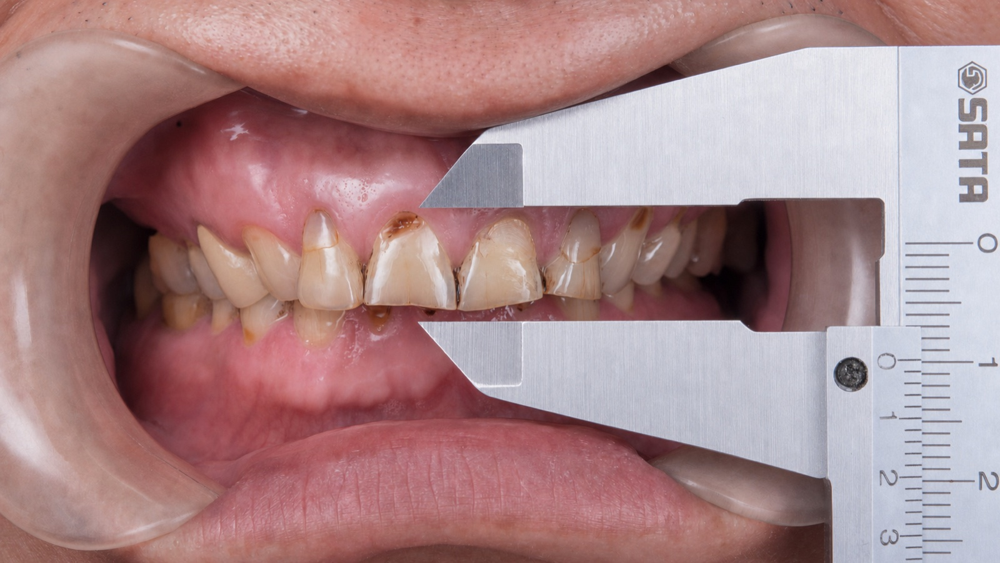
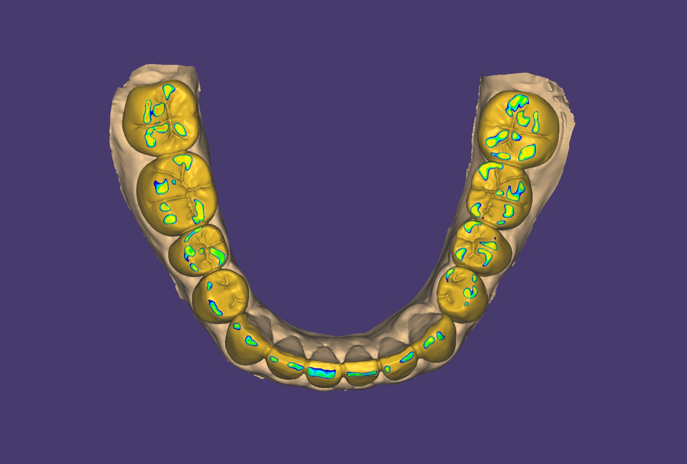

Festsitzendes restauratives CAD
Einzelkronen, Brücken, Veneers, Inlays, Onlays, Käppchen und restaurative CAD-Dateien, vorbereitet für die technische Überprüfung und Produktion.
Digitales Dentaldesign für Labore und Praxen
CAD-Leistungen zu Menüpreisen für Routinefälle, mit abgegrenzter Planungsunterstützung für komplexe Rehabilitationen.
MW DenTech unterstützt Dentallabore und digital ausgestattete Praxen, die externe Designkapazität für Kronen und Brücken, Ästhetik, Implantatfälle, Schienen, full-mouth-okklusale Rehabilitation und full-arch-Implantatrehabilitation benötigen.
Kern-CAD-Leistungen sind von strategischen Rehabilitations-Workflows getrennt, damit Routinefälle und mehrstufige Rekonstruktionen von Anfang an klar eingeordnet werden.
Kompakte, produktionsorientierte CAD-Unterstützung für Fälle, bei denen klinische Position und Behandlungsrichtung bereits definiert sind.
Einzelkronen, Brücken, Veneers, Inlays, Onlays, Käppchen und restaurative CAD-Dateien, vorbereitet für die technische Überprüfung und Produktion.

Smile Design, digitales Wax-up, Frontzahnmorphologie, Textur, Symmetrie und SmileCloud-unterstützte ästhetische Arbeitsabläufe.

Individuelle Abutments, Implantatkronen, verschraubte Restaurationen, Emergenzprofildesign und implantatrestaurierende CAD-Unterstützung.

Einzelimplantatführung CAD mit zusätzlichen Implantatstellen, Preis je nach Umfang, plus teilbogengeführtem Chirurgiedesign, wenn der Implantatplan und das Hülsenprotokoll klar sind.

Michigan-Schienen, Stabilisierungsschienen, Nachtschienen, Deprogrammierer und Routine-Appliance-CAD, wenn die Bissposition bereits verordnet ist.
Strategische, fallspezifische Planungsunterstützung für Fälle mit Sequenzierung, Verifikation und Koordination von Provisorium bis finaler Versorgung.
 AxisGuide
AxisGuide
Ausgewählte MRI/CBCT/STL-informierte Planungsunterstützung für vom Arzt geleitete TMJ-sensitive restaurative, kieferorthopädische und vollständige Mundrehabilitationsfälle.
Mehr zu AxisGuide Voller Mund
Voller Mund
Umfassende Rehabilitation bei abgenutztem Gebiss, VDO Veränderung, Korrektur der Okklusionsebene, additives Wax-up, provisorisches Design und endgültige restaurative CAD Koordination.
 Vollbogen
Vollbogen
All-on-X und Endgebiss-Arbeitsabläufe, einschließlich Implantatplanung für den gesamten Zahnbogen, Design der Bohrschablone, Planung von Fixierungsstiften, provisorisches Design mit sofortiger Belastung, Verifizierungsworkflows und endgültige Unterstützung für den gesamten Zahnbogen.

Wir machen die praktischen Details deutlich, bevor mit der Arbeit begonnen wird, damit Ihr Team weiß, was geliefert wird und wann es überprüft werden kann.
Komplexe zahnärztliche Unterlagen sind sensibel. Wir halten Zahlungen, klinische Dateien und Projektumfang getrennt, damit Labore und Kliniken zusammenarbeiten können, ohne unnötige Patienteninformationen preiszugeben.
CaseHub zentralisiert die strukturierte Fallaufnahme, Zahnauswahl, Datei-Upload, Statusverfolgung, Fallbesprechung und Lieferdateien in einem privaten Arbeitsbereich. Es ist nach Möglichkeit für anonymisierte oder minimierte klinische Aufzeichnungen gedacht und die Betaversion ist nur auf Einladung zugänglich, während MW DenTech den Arbeitsablauf mit ausgewählten Laboren und Kliniken validiert.
Erfassen Sie den Fallcode, die Verschreibungszusammenfassung, die ausgewählten Zähne, die Frist, die Dringlichkeit und die ersten Dateien, bevor MW mit der Prüfung des Umfangs beginnt.
Halten Sie Partnerfragen, MW-Notizen, Dateiübermittlung und Überprüfungsfeedback mit derselben Fallreferenz verknüpft.
Der Zugriff wird selektiv eingeführt, nachdem der Umfang der ersten Zusammenarbeit festgelegt und die Erwartungen an die Datenübertragung vereinbart wurden.
Routinemäßige Designarbeiten werden für die wiederkehrende Zusammenarbeit berechnet. Bei der fortgeschrittenen Planung steht weiterhin das Angebot an erster Stelle, so dass Bildprüfung, Sequenzierung, Verifizierung und vorläufige Phasen mit der erforderlichen Sorgfalt geplant werden.
Diese anonymisierten Beispiele zeigen die Art der Aufzeichnungen, Planungsergebnisse und klinischen Grenzen, die verwendet werden, wenn ein Fall über den Menüpreis CAD hinausgeht.






Mit den veröffentlichten Ab-Preisen können Kunden wiederholbare CAD-Arbeiten testen. Die aufgeführten EUR-Preise sind professionelle Nettohonorare ohne MwSt./IVA, sofern nicht anders angegeben. Angebotsbasierte Leistungen werden individuell abgegrenzt, wenn Sequenzierung, Bildprüfung oder stufenweise Provisorienplanung den Aufwand beeinflussen.
Hinweis zu MwSt. / IVA: Spanische IVA wird angewendet, wenn sie erforderlich ist; der Standardsatz beträgt derzeit 21 %. Berechtigte EU-B2B-Kunden können nach Bestätigung gültiger USt.-Angaben im Reverse-Charge-Verfahren abgerechnet werden; andere anwendbare Steuern richten sich nach Kundenstandort und Rechnungsstatus.
Auf realistischen dentalen CAD-Kosten aufgebaut. Die Preise beziehen sich ausschließlich auf CAD-Design und Planungsunterstützung; Druck, Fertigung, Komponenten, Versand, Zollgebühren, MwSt./IVA und andere Steuern sind nicht enthalten, sofern sie nicht im schriftlichen Angebot oder in der Rechnung ausdrücklich genannt werden. Volumenpreise sind möglich, sobald wiederkehrendes Volumen, Dateiqualität und Revisionsmuster belegt sind.
Die Preise für CAD-Arbeiten mit Menüpreis können nach der Dateiprüfung über das Menü berechnet werden. AxisGuide, Arbeitsabläufe für den gesamten Mund und den gesamten Zahnbogen werden zuerst festgelegt, da die Aufzeichnungs-, Sequenzierungs- und Überprüfungsschritte die tatsächliche Arbeitsbelastung definieren.
Wählen Sie einen CAD-Service mit Menüpreisen oder identifizieren Sie den Fall als AxisGuide, Rehabilitation des gesamten Mundes oder des gesamten Zahnbogens.
Wir überprüfen die Dateiqualität, die Bibliotheken, die Bissaufzeichnungen, die Bildgebung, die Produktionsmethode und den Übertragungsweg, bevor die Arbeit geplant wird.
CAD-Dienste mit Menüpreisen erhalten Zahlungs- und Rechnungsanweisungen nach Bestätigung des Umfangs; Komplexe Fälle erhalten ein schriftliches Angebot oder eine Anzahlungsanfrage.
Ihr Team überprüft die CAD- oder Planungsdateien vor der Herstellung oder der nächsten klinischen Phase.
Am besten für wiederholbare Arbeiten geeignet, bei denen Aufzeichnungen, Bissposition, Implantatbibliotheken und Produktionsmethode bereits klar sind.
Der Preis ergibt sich aus dem veröffentlichten Nettomenü nach Dateiprüfung und Bestätigung des Umfangs.
Menüangebot anfordernAm besten geeignet für Fälle, in denen Sequenzierung, Bildprüfung, vorläufige Strategie oder multidisziplinäre Koordination den Umfang beeinflussen.
Wird individuell vor dem schriftlichen Angebot, der Anzahlung oder den Anweisungen zur gestaffelten Zahlung festgelegt.
Angebot anfordernSenden Sie intraorale Scans, ggf. Bissaufzeichnungen, Ausgabeformat, CAD/CAM-System, Material oder Produktionsmethode und die gewünschte Bearbeitungszeit.
Senden Sie Scans, Fotos, Biss- oder Kieferbeziehungsaufzeichnungen, provisorische oder Wax-up-Referenzen, VDO oder okklusale Ziele und MRI/CBCT, sofern im Lieferumfang enthalten.
Senden Sie CBCT/DICOM, Implantatplan oder vorgeschlagene Positionen, scanbody- oder MUA-Datensätze, Fixierungsanforderungen, unmittelbares vorläufiges Ziel und endgültiges Prothesenziel.
Senden Sie zunächst einen repräsentativen Fall. Wir bestätigen, ob die Preisgestaltung für das Menü passt oder ob ein konkretes Angebot erforderlich ist, bevor mit der Gestaltung begonnen wird.
Kurze Antworten für Labore und Kliniker vor dem Absenden des ersten Falls.
MW DenTech bietet CAD-Design- und Planungsunterstützung. Preise sind Nettohonorare für CAD/Design; Druck, Fräsen, Komponenten, Versand, Zollgebühren, MwSt./IVA und andere Steuern sind nicht enthalten, sofern sie nicht separat vereinbart und im schriftlichen Angebot oder auf der Rechnung ausgewiesen sind.
Es ist Routine mit einer klaren Leistungskategorie, verwendbaren Aufzeichnungen, vorgeschriebener Bissposition, bekannter Produktionsmethode und vorhersehbaren Ergebnissen.
Komplexe Fälle hängen von Sequenzierung, bildgebender Überprüfung, vorläufiger Strategie, Verifizierungsaufzeichnungen und interdisziplinärer Koordination ab. Daher muss der Umfang vor der Preisfestsetzung bestätigt werden.
Eine technische Überarbeitung ist enthalten, wenn die ursprünglichen Aufzeichnungen und Anweisungen unverändert bleiben. Neue Datensätze, eine neue Bissposition, ein geänderter Implantatplan, eine geänderte Behandlungsrichtung oder hinzugefügte Leistungen werden als Umfangsaktualisierung behandelt.
Verwenden Sie einen vereinbarten Upload-Link oder einen sicheren Übertragungskanal. Entfernen Sie nach Möglichkeit patientenidentifizierende Informationen und halten Sie Zahlungsbelege frei von klinischen Details.
AxisGuide ist für ausgewählte, von Ärzten geleitete TMJ-sensitive Rehabilitationsfälle verfügbar. Es bietet einen strukturierten, bildgestützten Weg zum Planen, Testen und Überprüfen einer vorgeschlagenen Unterkieferposition vor der schrittweisen okklusalen Rekonstruktion.